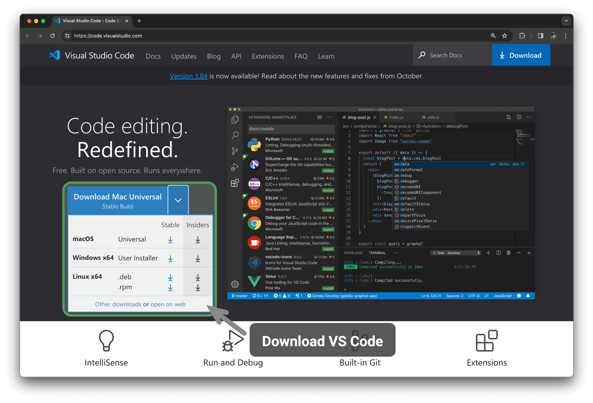

الملاحق
تثبيت بيئة البرمجة
تثبيت بيئة التطوير المتكاملة
نوصي باستخدام VS Code مفتوح المصدر وخفيف الوزن كبيئة تطوير متكاملة (IDE) محلية. تفضل بزيارة الموقع الرسمي لـ VS Code، ونزّل نسخة VS Code المناسبة لنظام التشغيل لديك وثبّتها.

يمتلك VS Code منظومة قوية من الإضافات تدعم تشغيل معظم لغات البرمجة وتنقيحها. على سبيل المثال، بعد تثبيت إضافة "Python Extension Pack" يمكنك تنقيح شيفرة Python. وتظهر خطوات التثبيت في الشكل التالي.
تثبيت بيئات اللغات
بيئة Python
- نزّل Miniconda3 وثبّتها مع Python 3.10 أو أحدث.
- ابحث عن
pythonفي سوق إضافات VS Code وثبّت Python Extension Pack. - (اختياري) أدخل
pip install blackفي سطر الأوامر لتثبيت منسّق الشيفرة.
بيئة C/C++
- تحتاج أنظمة Windows إلى تثبيت MinGW (دليل الإعداد)؛ أما macOS فيأتي مزوّداً بـ Clang ولا يحتاج إلى تثبيت.
- ابحث عن
c++في سوق إضافات VS Code وثبّت C/C++ Extension Pack. - (اختياري) افتح صفحة الإعدادات، وابحث عن خيار تنسيق الشيفرة
Clang_format_fallback Style، واضبطه على{ BasedOnStyle: Microsoft, BreakBeforeBraces: Attach }.
بيئة Java
- نزّل OpenJDK (الإصدار 10 أو أحدث) وثبّته.
- ابحث عن
javaفي سوق إضافات VS Code وثبّت Extension Pack for Java.
بيئة C#
- نزّل .NET 8.0 وثبّته.
- ابحث عن
C# Dev Kitفي سوق إضافات VS Code وثبّت C# Dev Kit (دليل الإعداد). - يمكنك أيضاً استخدام Visual Studio (دليل التثبيت).
بيئة Go
- نزّل Go وثبّته.
- ابحث عن
goفي سوق إضافات VS Code وثبّت Go. - اضغط
Ctrl + Shift + Pلفتح لوحة الأوامر، واكتبgo، واخترGo: Install/Update Tools، وحدّد جميع الخيارات وثبّتها.
بيئة Swift
- نزّل Swift وثبّته.
- ابحث عن
swiftفي سوق إضافات VS Code وثبّت Swift for Visual Studio Code.
بيئة JavaScript
- نزّل Node.js وثبّته.
- (اختياري) ابحث عن
Prettierفي سوق إضافات VS Code وثبّت منسّق الشيفرة.
بيئة TypeScript
- اتبع خطوات التثبيت نفسها الخاصة ببيئة JavaScript.
- ثبّت TypeScript Execute (tsx).
- ابحث عن
typescriptفي سوق إضافات VS Code وثبّت Pretty TypeScript Errors.
بيئة Dart
بيئة Rust
- نزّل Rust وثبّته.
- ابحث عن
rustفي سوق إضافات VS Code وثبّت rust-analyzer.